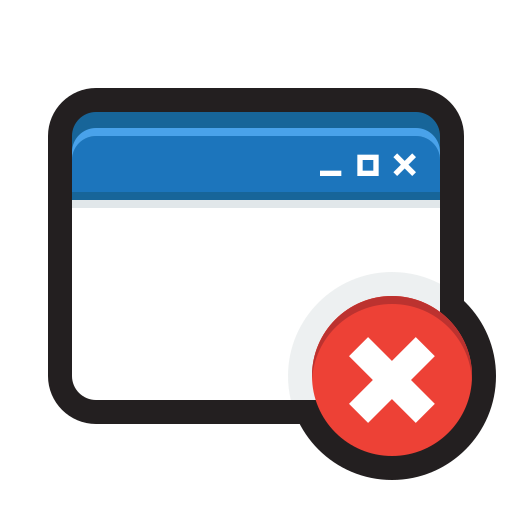
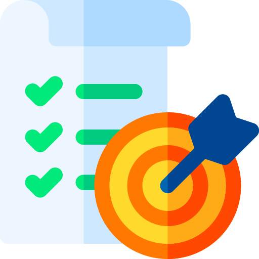

| Diagramador | Ano | Módulo | Frente | Atividade | Início | Previsto | Pausa/Prioridade | Fim | Status | Ações |
|---|
Selecione uma área para acessar o quadro de demandas.
Produção editorial dos núcleos.
Serviço técnico.
Não foi possível ler a lista oficial de diagramadores (aba LISTAS). Os indicadores da equipe estão indisponíveis.
Não foi possível consultar as férias. A contagem de diagramadores de férias está indisponível e a lista de livres pode incluir quem está de férias.
Não foi possível carregar as demandas da planilha. Os indicadores da equipe estão indisponíveis.
Profissionais disponíveis para novas demandas.
Profissionais com demandas em andamento.
Profissionais temporariamente indisponíveis por período de férias.
Conheça os profissionais responsáveis pela produção editorial.
Indicadores consolidados da produção de diagramação.
Atividades concluídas com prazo previsto informado.
Total de atividades concluídas por diagramador.
| Diagramador | Total de Atividades | Concluídas | Em andamento | Pendentes | Total no prazo | Total atrasada | % no prazo | % atrasado | % participação |
|---|
Acompanhamento diário de atividades em execução, entregas concluídas e dias sem registros.
Dados de férias indisponíveis no momento: as férias não estão marcadas no mapa.



| Diagramador | Ano | Módulo | Frente | Atividade | Início | Previsto | Pausa/Prioridade | Fim | Status | Ações |
|---|
Carregando painel de produção...